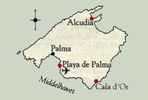

ALCUDIA
Alcudia har i løpet av de siste årene utviklet seg til å bli familiested nr.1 på Mallorca. Det skyldes ikke minst den 14 km lange sandstranden og de mange fornøyelsene for hele familien. Et godt valg for en herlig ferie.
Den lille, livlige byen på nordøstsiden av Mallorca, er stedet du bør reise til når du skal ha med deg barna på ferie. Her er Mallorcas beste og mest barnevennlige strand, barnevennlige leilighetsanlegg av høy standard, koselige restauranter, diskoteker og dansesteder. Tjæreborg arrangerer spennende utflukter som passer for store og små. Vi hjelper dessuten til med leiebil slik at dere kan oppleve øya på egen hånd. Det skal ikke lange kjøreturen til før dere kommer til uberørte små landsbyer hvor dere blir tatt i mot med ekte mallorkinsk gjestfrihet. Ikke langt fra Alcudia ligger dessuten et romersk teater fra ca. 100 år f. Kr., og ruinene av den romerske byen Pollentia, Mallorcas eldste by. Har du planer om å ta med familien på ferie, bør du bestille plass på Tjæreborgs hotell Sea Club i Alcudia. Leilighetsanlegget som har alt store og små kan drømme om, ligger like ved den flotte stranden i Alcudia.

TJÆREBORG CENTER: SEA CLUB ALCUDIA
Her har du alle mulighetene for å krydre en avslappet ferie ved en av Middelhavets beste sandstrender med aktiviteter på Sea Club. Centret ligger sentralt i forhold til den hyggelige ferienbyen Alcudia.
Sea Club Alcudia drives av Tjæreborgs egen hotellkjede Stella Polaris og er kjent for det høye servicenivået. Centret byr på aktiviteter for alle aldersgrupper: Barna har det morsomt i Tjæreborgs Teddy Club hvor det f.eks. er skattejakt, leker ved bassenget og morsomme konkurranser.
De voksne har det heller ikke kjedelig. For morgenfuglene er det morgengymnastikk, og i løpet av dagen er det andre innslag som f.eks. vannpolo, boccia eller crazy golf. På slutten av ettermiddagen er det "happy hour" i baren hvor vi møtes for å spille bingo og er med på gjettekonkurranser.
Etter en dag med mange aktiviteter er restauranten et hyggelig samlingspunkt med underholdning og show for hele familien. Sea Club Alcudia har et stort utendørs lekeområde, og vil du ikke ligge ved bassenget, er det gressplener hvor du kan sole deg og slappe av i fred og ro. Fra centret er det ikke langt til byen Alcudia med gode restauranter og barer, en vannpark, minigolf osv. Tjæreborg Center henvender seg til alle aldersgrupper, og du bestemmer selv tempoet. Ønsker du å se mer av øya - enten på Tjæreborgs turer eller på egen hånd, kan du kontakte Tjæreborgs Serviceskranke på centret, som har åpent det meste av uken. Her hjelper guidene med praktiske råd om reisemålet og gir tips om alle de mulighetene du har for å få en perfekt ferie.
SEA CLUB
| Strand | 600 m | Restaurant | Ja | Etasjer | 2
|
| Supermarked | Ja | Bar | Ja | Heis | -
|
| Til buss | 300 m | TV-rom | Ja | Senger | 582
|
| Sentrum | 1,5 km | Salong | - | Tlf. i leil./rom | -
|
| Basseng | Ja | Resepsjon | Ja | TV i leil./rom | -
|
| Barnebass. | Ja | Deponering | Ja | Kjøleskap | Ja
|
| Solterrasse | Ja | Elektrisitet | 220 v | Byggeår | 1987
|
LEILIGHETER KATEGORI 3+
Et flott anlegg bygget som en ferielandsby med flere lave rekkehus.
Anlegget er perfekt for barnefamilier som setter pris på gode fasiliteter. Sea Club Alcudia er beliggende i et hotellområde med lett lokaltrafikk. Anlegget har flere hager og flotte bassengområder med gratis solstoler og parasoller, samt poolbarer. Ved friluftsscenen er det daglige aktiviteter, samt levende musikk og underholdning flere ganger i uken. Det finnes bl.a. bordtennis og biljard, samt volley-og basketballnett. Det er Teddy Club, lekeplass og lekerom for barna. Leilighetene er lyse og pene med kjøkkenkrok og intern telefon.
Adr. Av. de Mexico 19, E-07408 Puerto de Alcudia.
Tlf.: 00 34 71/89 01 77. Fax: 00 34 71/89 10 16.
Rengjøring 6 ganger i uken. Noen leiligheter har musikkstøy fra nærliggende diskotek. Forøvrig støy fra aktivitetene ved anlegget. 1-roms leilighetene er beliggende over restauranten og har derfor noe støy.
CALA D'OR
Klippekysten på sydøstsiden av Mallorca er avbrutt av små, idylliske bukter med gyldne sandstrender. Her ligger Cala d'Or, en av øyas mest eksklusive feriebyer og et av våre mest ettertraktede familiesteder.
Små badebukter med sandstrender, lave, hvitkalkede hus, travle gågater og en stemningsfull marina.... Cala d'Or er en av Mallorcas mest idylliske byer, med vakker arkitektur og et eksklusivt preg. Det er også her vi har vårt populære Tjæreborg Center Cala Azul Park, som er så ettertraktet at vi ofte er utsolgt lenge før sommeren starter. Forøvrig er alle våre bosteder i Cala d'Or av høy standard, de fleste med svømmebassenger og bare noen meter til byens mange idylliske badeviker. Avstanden til sentrum, hvor butikker og restauranter ligger som perler på en snor i de sjarmerende gågatene, er også kort. Du kan gå, eller gjøre som alle barn helst vil - ta det morsomme minitoget inn til sentrum. Fra Cala d'Or er det kort vei både til Palma og de mange små landsbyene i området. Dykking har blitt veldig populært, så vil du bli kjent med en ny verden, har Tjæreborg knyttet kontakt med en ny dykkerskole på stedet.
TJÆREBORG CENTER: CALA AZUL PARK
Et flott hotellområde i noen av de vakreste omgivelser på Mallorca og rett ut til havet. Cala Azul Park er oppført med henblikk på å gi hele
familien en god og avslappet ferie med innhold for både voksne og barn.
Cala Azul Park har en perfekt beliggenhet like ved en liten bukt med herlige sandstrender på begge sider av bukten. Centret byr på aktiviteter for alle aldersgrupper: Barna har det morsomt i Tjæreborgs Teddy Club hvor det f.eks. er skattejakt, leker ved bassenget og morsomme konkurranser. De voksne har det heller ikke kjedelig. For morgenfuglene er det morgengymnastikk, og i løpet av dagen er det andre innslag som f.eks. vannpolo eller boccia. Det er også fine muligheter for å spille tennis. På slutten av ettermiddagen er det "happy hour" i baren hvor vi møtes for å spille bingo og er med på gjettekonkurranser. Etter en dag med mange aktiviteter er restauranten et hyggelig samlingspunkt med underholdning og show for hele familien. Vil du danse til moderne rytmer, ligger Cala Azuls Park eget diskotek like utenfor hotellområdet. Fra centret er det ikke langt med drosje eller man kan gå til Cala d'Ors sentrum hvor de hvitkalkede husene er bygget i arabisk stil. Her er det restauranter, barer, forretninger m.m. Tjæreborg Center henvender seg til alle aldersgrupper, og du bestemmer selv tempoet. Ønsker du å se mer av øya - enten på Tjæreborgs turer eller på egen hånd, kan du kontakte Tjæreborgs Servicekontor som har åpent det meste av uken. Her hjelper guidene med praktiske råd om reisemålet og gir tips om alle de mulighetene du har for å få en perfekt ferie.
CALA AZUL PARK
| Strand | 300 m | Restaurant | Ja | Etasjer | 3
|
| Supermarked | Ja | Bar | Ja | Heis | -
|
| Til buss | 100 m | TV-rom | Ja | Senger | 498
|
| Sentrum | 1 km | Salong | Ja | Tlf. i leil./rom | Ja
|
| Basseng | Ja | Resepsjon | Ja | TV i leil./rom | -
|
| Barnebass. | Ja | Deponering | Ja | Kjøleskap | Ja
|
| Solterrasse | Ja | Elektrisitet | 220 v | Byggeår | 1987
|
LEILIGHETER KATEGORI 3+
Vårt Tjæreborg Center, Cala Azul Park, er av høy kvalitet, og er det
beste utgangspunkt for en vellykket familieferie. Anlegget består av flere bygninger beliggende i en hage og ved det store, flotte bassengområdet. Her finnes det pool-/snackbar, samt gratis solstoler og parasoller. Det
foregår centeraktiviteter daglig for både voksne og barn. Av sportsmuligheter er det tennis, biljard, squash, minigolf og windsurfing. For barna
finnes det Club Teddy, lekeplass og lekerom. Det er underholdning i
baren om aftenen. Leilighetene er lyse, pene og velutstyrte med kjøkkenkrok.
Adr.: Urbanizacion Cala Esmeralda, E-07660 Cala d'Or.
Tlf.: 00 34 71/64 30 85. Fax: 00 34 71/64 30 70.
Rengjøring 6 ganger i uken. Anlegget er uegnet for folk med gangbesvær p.g.a. mange trapper innen anleggets område. Musikkstøy.
TUCAN
| Strand | 200 m | Restaurant | Ja | Etasjer | 4
|
| Supermarked | 20 m | Bar | Ja | Heis | Ja
|
| Til buss | 100 m | TV-rom | Ja | Senger | 354
|
| Sentrum | 0 km | Salong | Ja | Tlf. i leil./rom | Ja
|
| Basseng | Ja | Resepsjon | Ja | TV i leil./rom | -
|
| Barnebass. | - | Deponering | Ja | Kjøleskap | -
|
| Solterrasse | Ja | Elektrisitet | 220 v | Byggeår | 1975/94
|
HOTELL
KATEGORI 4
Et velfungerende hotell med god beliggenhet i sentrum av Cala d'Or og like ved bukten og stranden, Cala Gran. Det er lokaltrafikk i området. Hotellet har et fint bassengområde med kombinert voksen- og barne-
basseng, utendørs servering, samt gratis solstoler og parasoller. Hotellet har også en hyggelig innendørs bar. Værelsene er lyse og pene.
Adr.: Boulevard s/n, E-07660 Cala d'Or.
Tlf.: 00 34 71/65 72 00. Fax: 00 34 71/65 72 25.
Noe trafikkstøy.
CALA AZUL GARDEN
| Strand | 250 m | Restaurant | - | Etasjer | 3
|
| Supermarked | 25 m | Bar | - | Heis | -
|
| Til buss | 50 m | TV-rom | - | Senger | 260
|
| Sentrum | 1,1 km | Salong | - | Tlf. i leil./rom | Ja
|
| Basseng | Ja | Resepsjon | Ja | TV i leil./rom | -
|
| Barnebass. | Ja | Deponering | Ja | Kjøleskap | Ja
|
| Solterrasse | Ja | Elektrisitet | 220 v | Byggeår | 1994/95
|
LEILIGHETER KATEGORI 3+
Et godt leilighetsanlegg beliggende i rolige omgivelser utenfor sentrum av Cala d'Or, og 175 m fra søsterhotellet, Cala Azul Park. Det er kun
lokaltrafikk i området. Nærmeste strand er den lille sandstranden ved Cala Esmeralda. Anlegget har bl.a. hage, et stort og flott bassengområde med gratis solstoler og parasoller. Øvrige fasiliteter er felles med Cala Azul Park. Her finnes f.eks. restaurant, bar med kveldsunderholdning, tennis, biljard, squash, minigolf og lekeplass. Leilighetene er store og romslige med kjøkkenkrok. Adr.: Urbanizacion Cala Esmeralda, E-07660 Cala d'Or.
Tlf.: 00 34 71/64 30 85. Fax: 00 34 71/64 30 70.
Rengjøring 6 ganger i uken. Anlegget er uegnet for folk med gangbesvær p.g.a. mange trapper. Cala Azul Garden er nybygget i 1995, og det vil fortsatt skje utbygging og forbedringer til 1996. Mindre mangler vil derfor kunne forekomme.
ES TALAYAL
| Strand | 100 m | Restaurant | Ja | Etasjer | 3
|
| Supermarked | Ja | Bar | Ja | Heis | -
|
| Til buss | 100 m | TV-rom | Ja | Senger | 540
|
| Sentrum | 2,8 km | Salong | Ja | Tlf. i leil./rom | -
|
| Basseng | Ja | Resepsjon | Ja | TV i leil./rom | -
|
| Barnebass. | Ja | Deponering | Ja | Kjøleskap | Ja
|
| Solterrasse | Ja | Elektrisitet | 220 v | Byggeår | 1987
|
LEILIGHETER KATEGORI 3
Et familievennlig leilighetsanlegg beliggende i et naturskjønt område, like ved en liten bukt og sandstrand. Det er kun lokaltrafikk i området. Anleggets naturlige samlingssted er ved bassengområdet som ligger midt i en stor hage, og hvor det er gratis solstoler og parasoller, samt snack-/
poolbar. Hotellet har et aktivitetsprogram morgen og kveld for både voksne og barn. For de yngste (fra 3-12 år) finnes hotellets barneklubb og lekerom. Skandinaviske aktivitetsledere kan ikke forventes. Det er også muligheter for volley- og basketball, fotball og tennis. Adr.: Avenida es Forti, E-07660 Cala d'Or.
Tlf.: 00 34 71/65 73 49. Fax: 00 34 71/64 31 19.
Rengjøring 5 ganger i uken.
CARAVELLA
| Strand | 200 m | Restaurant | Ja | Etasjer | 3
|
| Supermarked | 10 m | Bar | Ja | Heis | -
|
| Til buss | 100 m | TV-rom | Ja | Senger | 80
|
| Sentrum | 0 m | Salong | Ja | Tlf. i leil./rom | Ja
|
| Basseng | - | Resepsjon | Ja | TV i leil./rom | -
|
| Barnebass. | - | Deponering | Ja | Kjøleskap | Ja
|
| Solterrasse | - | Elektrisitet | 220 v | Byggeår | 1975
|
HOTELL KATEGORI 2+
Lite og hyggelig hotell med en familiær atmosfære beliggende like ved gågaten i sentrum av Cala d'Or hvor det finnes en rekke barer, restauranter og butikker. Hotellet har en liten bar og frokostrestaurant hvor den enklere frokosten inntas. Værelsene er små og pene med takvifte.
Adr.: Calle Boulevard s/n, E-07660 Cala d'Or.
Tlf.: 00 34 71/65 73 66.
Fax: 00 34 71/65 77 26.
Begrenset resepsjonsservice. Trafikkstøy, samt støy fra nærliggende barer,
restauranter m.m.
D'OR
| Strand | 500 m | Restaurant | - | Etasjer | 2
|
| Supermarked | 500 m | Bar | - | Heis | -
|
| Til buss | 50 m | TV-rom | - | Senger | 46
|
| Sentrum | 500 m | Salong | - | Tlf. i leil./rom | -
|
| Basseng | Ja | Resepsjon | - | TV i leil./rom | -
|
| Barnebass. | Ja | Deponering | Ja | Kjøleskap | Ja
|
| Solterrasse | Ja | Elektrisitet | 220 v | Byggeår | 1987
|
LEILIGHETER KATEGORI 2+
Leiligheter D'Or er et lite familievennlig anlegg med en hyggelig
atmosfære som gjør at man lett kommer i kontakt med de andre gjestene. Anlegget er beliggende i et villa-område med sterk lokaltrafikk. Det finnes et lite svømmebasseng med solterrasse, samt gratis solstoler. Leilighetene er store, pene og innredet i spansk stil. Adr.: c/o Consolacion 4, E-07660 Cala d'Or .
Ingen telefon eller fax.
Rengjøring 5 ganger i uken. Trafikkstøy og hundeglam.
PLAYA DE PALMA
Vil du nyte badelivets gleder og samtidig være i nærheten av en levende og spennende storby med et hav av innkjøpsmuligheter, restauranter, barer og underholdning - ja, så er Playa de Palma stedet.
Stranden ved Playa de Palma er stor og barnevennlig, samtidig som den er et flott utgangspunkt for all slags vannsport som for eksempel windsurfing, paragliding, vannski eller vannsykling. Det er ingen gjennomgangstrafikk i området rundt stranden, så alt ligger til rette for en deilig og avslappet badeferie. Alt er dessuten innenfor rekkevidde: Langs den lange strandpromenaden ligger restauranter og barer på rekke og rad. Muligheter for natteliv mangler heller ikke. Men vil du oppleve flere fornøyelser har du storbyen Palma, bare en kort taxi- eller busstur unna. Playa de Palma er også et fint utgangspunkt for turer til øvrige deler av Mallorca. Bare noen kilometer unna venter fjellene med frodige daler og uberørte små landsbyer. Tjæreborgs hotell/leiligheter ved Playa de Palma er alle av god standard og med alle de fasiliteter som trengs for at du skal ha en avslappet ferie, enten du ferierer med barna eller alene.
ROYAL PLAYA DE PALMA
| Strand | 20 m | Restaurant | Ja | Etasjer | 7
|
| Supermarked | 50 m | Bar | Ja | Heis | Ja
|
| Til buss | 130 m | TV-rom | Ja | Senger | 450
|
| Sentrum | 12 km | Salong | Ja | Tlf. i leil./rom | Ja
|
| Basseng | Ja | Resepsjon | Ja | TV i leil./rom | -
|
| Barnebass. | Ja | Deponering | Ja | Kjøleskap | Ja
|
| Solterrasse | Ja | Elektrisitet | 220 v | Byggeår | 1983/94
|
LEILIGHETER KATEGORI 4
Et populært og flott leilighetsanlegg som ble renovert i 1994. Royal Playa de Palma er stedet for dem som setter pris på komfort, og samtidig er anlegget velegnet for barnefamilier. Anlegget er beliggende midt på den lange, finkornede sandstranden mellom Ca'n Pastilla og Arenal, ca. 950 m fra sentrum av Playa de Palma. Det er hotellbebyggelse og lokaltrafikk i området. Av fasiliteter har anlegget bl.a. innen- og utendørs svømmebasseng, solterrasse med gratis solstoler, samt snackbar. Konferanserom. I bygningen finnes også sauna, skjønnhetssalong og butikker. Det er underholdning om aftenen flere ganger i uken. Ved bassenget utendørs foregår det daglig ulike aktiviteter for både voksne og barn ledet av anleggets egne animatører. Det er likeledes biljard og bordtennis på anlegget, og dessuten kan tennisbaner, minifotball og trimrom på hotell Royal Cristina benyttes. Aircondition i leilighetene.
Adr.: Calle Marbella s/n, E-07610 Playa de Palma.
Tlf.: 00 34 71/26 64 50. Fax: 00 34 71/20 12 67.
Rengjøring hver dag. Lange bukser er obligatorisk for herrene ved middagen.
FONTANELLAS PLAYA
| Strand | 20 m | Restaurant | Ja | Etasjer | 5
|
| Supermarked | 550 km | Bar | Ja | Heis | Ja
|
| Til buss | 135 m | TV-rom | Ja | Senger | 340
|
| Sentrum | 10,5 km | Salong | Ja | Tlf. i leil./rom | Ja
|
| Basseng | Ja | Resepsjon | Ja | TV i leil./rom | -
|
| Barnebass. | Ja | Deponering | Ja | Kjøleskap | Ja
|
| Solterrasse | Ja | Elektrisitet | 220 v | Byggeår | 1991
|
LEILIGHETER KATEGORI 3+
Et bra leilighetsanlegg som består av to bygninger. Anlegget er beliggende ved den store, finkornede sandstranden ved begynnelsen av Playa de Palma, på grensen til bydelen Ca'n Pastilla, og ca. 500 m fra sentrum
av Playa de Palma. Det er hotellbebyggelse og lokaltrafikk i området.
Hotellet har bl.a. et stort utendørs bassengområde med gratis solstoler, hvor barnebassenget er en del av voksenbassenget. I tillegg finnes det et innendørs basseng som er åpent i månedene april og mai, snackbar,
konferanselokale, trimrom, sauna, tennis, bordtennis, petanquebane og volleyball. Leilighetene er lyse og pene med kjøkkenkrok. TV kan leies mot betaling.
Adr.: Calle Carabella s/n, E-07610 Playa de Palma.
Tlf.: 00 34 71/26 48 29. Fax: 00 34 71/26 47 54.
Rengjøring 5 ganger i uken. Trafikk- og flystøy.
![[Tjæreborg-Hjemmeside]](http:img/icon.gif)
![[SN Horisont]](http://www.sn.no/img/horisont.gif)